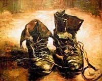
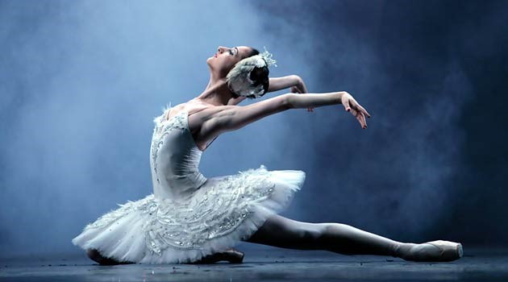
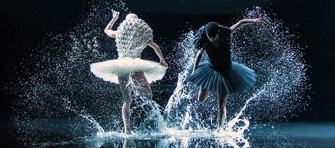

Introducción
La obra de arte escénica, posee la cualidad de desvelarse en movimiento y en este mover de cuerpos , que se desplazan en un espacio, surgen diversos fenómenos que se pueden analizar desde aquello que involucra al creador de la obra, así como también al espectador-intérprete. Los ejes teóricos desde lo que se partirá son: la metáfora, la noción de mito de Rolando Barthes y la noción de Verdad de Martin Heidegger, se establecerá una relación entre estas y se analizará el cómo se desvelan en la obra de arte. Además, partiendo de lo anterior, se intentará realizar una mirada concluyente del Ser del Arte escénico y su función o misión social.
Palabras claves
Obra de Arte. Metáfora. Mito. Mitologías. Mitopoiesis, Barthes. Verdad. Ser. Heidegger.
La función de la metáfora en la obra de arte
El lenguaje, en la obra de arte, es un vehículo que transporta significaciones, alegorías y metáforas, estos elementos componen y fundan una mitología estética; que se percibe como un todo; pero la confluencia de los elementos nombrados se compone en una mitopoiesis, es decir que se crea un universo de entendimiento único, una mitología Poiesis, es un término derivado del griego ποιέω poieō, que significa, aproximadamente, producción o creación; Platón, en El banquete, define al término poiesis como “la causa que convierte cualquier cosa que consideremos de no-ser a ser”. (Platón, Banquete. p. 252, 205b)
Cabe aclarar que no es lo mismo metáfora que mitología. La metáfora es un instrumento retórico, un instrumento que sirve para representar algo, se puede decir que es una Similitudo Condensada (comparación condensada). Es un signo retórico que, si bien su aplicación es utilizada en la literatura y en la poesía, en el arte escénico es reconocida como representaciones que el creador de la obra utiliza para darle un carácter único y auténtico a la misma.
Este recurso intenta persuadir de una manera que no es cotidiana en el lenguaje mediante figuras similares o verosímiles, con el objetivo de transportar a los intérpretes, en uso de su imaginación, a emociones o sensaciones. El sujeto asume que esto es un recurso que no se encuentra relacionado con la realidad objetiva, por eso lo verosímil; y sabe además que son aplicaciones del artista-creador de signos-palabras y/o signos-imágenes con el fin de proyectar su pensamiento o su visión.
No es necesario que la metáfora, o alegoría, posea estructura lógica, lingüística o que proceda por principio de correspondencia con la realidad; el receptor, asume que esto es así y no es incómodo para este, sino que le interpela para que su voluntad imaginativa sea liberada.
En definitiva, la metáfora es un utensilio que se implementa en la poiesis (composición o creación) de la obra, es decir que se implementa con antelación, es pensada y analizada con el único objetivo de persuadir y movilizar la voluntad del espectador y del artista en escena, los cuales interpretarán desde su imaginación el hecho artístico. La metáfora o la alegoría, es explicita en la composición de la obra o en la poiesis, empero, en su despliegue es imperativo que se oculte, que no se muestre, aunque el espectador lo sepa o lo vea, no debe explicitarse ya que pierde fuerza simbólica.
Esta explicación de la metáfora, se hace necesaria para despejar ciertas presunciones en cuanto a que se la toma como el principal y exclusivo vehículo de la obra de arte, cuando en realidad es el mito, que compone un universo donde la obra de arte se establece como única.
El Mito como constructor de sentido.
Por otro lado, tenemos la estructura mitológica, esta varía en las obras de arte; cada obra escénica posee una mitología que es estructurada por el creador a base de alegorías, representaciones y metáforas; esto es mitopoiesis, que es la creación de un universo mitológico de la mano de un sujeto que crea la obra de arte y que tiene determinados objetivos, digamos que en cuanto al “mensaje” que quiere ofrecer. De esta manera, el creador construye una red semiótica, una red de signos-imágenes, basada en conceptos y principios, y tiene a la metáfora como principal vehículo comunicativo.
Entonces, ¿Qué es el mito? No es Mito a la forma que estamos acostumbrados a entenderlo, no nos referimos a la mitología griega, nórdica o romana, aunque si en su esencia, sino que se hace referencia a la forma que la expone Roland Barthes.
En Mitologias, este pensador le da tratamiento a la noción de mito, elaborando un estudio al cual lo define como un tipo habla, un mensaje que subyace a un sistema de comunicación especifico, no es un concepto u objeto en cuanto a que no es posible definirlo de este modo, sino que es una forma de significación que le da una forma determinada a un mensaje. Todo es susceptible de investirse de mito, este agazapa el signo apropiándose de él; es una forma parasitaria que invade cualquier palabra y la trastoca conforme a un discurso determinado. Para comprender esta noción, es menester remontarse a Ferdinand de Saussure que toma al signo como una diada compuesta por la conexión entre significado y significante, es decir entre concepto y representación sensorial respectivamente (Saussure, 1976). Desde esta estructura de análisis parte Barthes, como nos señala el autor, “Un árbol es un árbol. No cabe duda. Pero un árbol narrado por Minou Drouet deja de ser estrictamente un árbol, es un árbol decorado, adaptado a un determinado consumo, investido de complacencias literarias, de rebuscamientos, de imágenes, en suma, de un uso social que se agrega a la pura materia” (Barthes, 2008, p. 118).
De esta manera, el mito, parte de un significado/significante para constituir uno o más significantes alternativos, para asentarse en otras materialidades. Pero esta característica no es constitutiva del mito, no lo pinta de cuerpo entero ya que, sería un mero símbolo. El mito, para constituirse como tal, es necesario que se naturalice, un relato se repite tantas veces que se toma como cierto, el mito no reemplaza al signo del que parte, sino que crea un nuevo significante a partir de este y se inscribe en diversas materialidades; “… la causa que hace proferir el habla mítica es perfectamente explicita, pero de inmediato queda convertida en naturaleza, es decir que se hace natural”. (Barthes.2008, p. 120-121)
Por natural se quiere expresar que el mito se naturaliza de tal manera que se hace imperceptible su intención, los que intervienen en una mitología lo toman como algo que es y que debe ser así; ignorando su origen, pero si asumen su necesariedad ya que establece una visión de la realidad que se hace coherente y lógica para la subjetividad de los sujetos de una comunidad determinada. El mito no debe ser entendido como una naturalización que se asienta en lo temporal-histórico, aunque si se puede examinar de esta perspectiva en cuanto a su influencia en las diversas sociedades, sino que es preciso que se considere su naturalización y necesariedad desde su influencia en las subjetividades.
En cuanto a la obra de arte, el mito que se inaugura en un espacio y tiempo determinado, permite, aunque sea por un breve tiempo, introducir al espectador-intérprete en un estado en el que se lo puede considerar como cierto y real.
Lo ideológico del mito
El mito, se asienta en discursos que conocemos usualmente como ideologías, podríamos decir también que todo discurso que se da en el ámbito público es estrictamente ideológico, por esto vamos a usar una sinonimia entre mito, discurso e ideología, el mito estructura el ser y deber ser, tiene intenciones de expandirse porque, si no tiene esa pretensión, el mito se contrae hasta su desaparición.
El mito posee el propósito de naturalización y de perdurabilidad, se aleja de la correspondencia con el objeto por necesidad, “La naturalización, tiene que ver también con el “reconocimiento” u “olvido” del proceso de constitución del objeto-mercancía” (Simón. p. 53); es decir que el mito se aleja de la correspondencia entre el concepto de una cosa y su representación sensorial.
Es ideológico porque tiene un discurso específico sobre la realidad y al proferirlo se intenta de persuadir sobre la conveniencia de entender este universo y apropiarlo. El creador encargado usa esto para expresar su noción de la realidad y es el causante de la mitopoiesis y por esto de la estructura mitológica de la obra de arte que si lo logra esto será imperceptible para el intérprete-espectador. Si lo logra tanto, metáfora y alegoría, es decir los mitos que expone, desaparecen, la obra se revela hasta con cierta inocencia.
Podemos decir que todo mito, por poseer ideología, es un habla política, es decir que se desenvuelve en el ámbito público y por esto ofrece una visión determinada de la realidad, un horizonte de sentido que es político. En la obra de arte el mito ofrece un mito-principio y un mito-imagen, que van acompañados uno con otro, pero que se ofrecen por separado, un mito-principio es aquello que el creador quiere ofrecer como idea principal de la obra; supongamos el concepto de libertad, este puede rondar en toda la obra o puede depositarla en un intérprete determinado, y aquí el mito-imagen, que no es más que la exposición de un mito recaído en entes materiales o sensibles. Por más que su creador afirme que su obra no tiene intenciones políticas, en realidad sí, porque lo que intenta es ofrecer su visión de lo que es y/o lo que debería ser la realidad. Entonces sus intenciones pueden ser explicitas o implícitas, explicita cuando el creador es claro en sus intenciones, es decir que mostrará su mitopoiesis y sus metáforas con el fin de que el espectador-intérprete entienda en qué dirección desea el creador que valla y el espectador irá o no en esa dirección dependiendo de su entendimiento. O será implícita donde el creador ofrece sus mitos y el intérprete-espectador puede o no puede ir dependiendo de su imaginación. Entonces, a la vez que se abre una experiencia estética, también se inaugura un lenguaje que, en concurso con los sentidos, se abre un universo mitológico único; que es ideológico pero que oculta sus mitos y por consiguiente sus metáforas y sus alegorías, esto es necesario hasta para el gusto del espectador ya que cuando su ideología se hace obvia o explicita, este se retrae y abandona el estado de abierto para que acontezca la obra. Es decir que ya no se dejará persuadir y se sentirá incómodo; puede ocurrir que en efecto lo acepte, pero el espectador habitará la obra desde una perspectiva inteligible y no sensorial. En este escrito se piensa que una obra de arte debe habitarse desde lo oculto de las metáforas y sus mitos y que su desocultamiento quede a cargo del espectador.
Martin Heidegger y la noción de Verdad en la obra de arte.
Heidegger, en El Origen de la obra de arte, describe el modo de Ser de la obra la cual es una cosa, pero que su símbolo y su alegoría da a entender algo más, su Ser-cosa pasa a un modo de Ser distinto, que no tiene relación con la verdad objetiva de las cosas; el pensador pone como ejemplo los zapatos de una campesina en un cuadro de Vincent Van Gogh, donde aparece el ser-cosa de la obra, unos meros zapatos, que son útiles y su materialidad es ofrecida a los sentidos.
Empero, la pintura además ofrece la Verdad de los zapatos, se puede percibir a una campesina dedicada a la labranza, su aspecto desgastado y con suciedad nos muestra que es una tarea que implica mucho esfuerzo y voluntad, etc.
Como se dijo, es una Verdad la que se desvela que surge para el espectador, y por eso la obra de arte toma un modo de Ser especifico, inigualable e incomparable.
Heidegger expone la noción de verdad, no como aquello que se da objetivamente, no como la parada final de un problema o un cuestionamiento, sino como como un proceso de desocultamiento, es un acontecimiento, la verdad acontece de a poco. Los griegos denominaban a esto Aletheia, que es desocultar, los mismos no exponían este concepto como contrapuesto a lo falso, fue Cicerón el que, al intentar una traducción de los términos griegos, solo pudo relacionarlo con el termino veritas que se dirige a la noción de objetividad o certeza; he aquí el problema terminológico en el que fueron sumergidas nuestras sociedades. Aletheia es desocultar o desvelar.
¿Qué se desoculta para Heidegger? Es la aletheia de la obra de arte, que es su Ser. Un Modo de Ser que conecta al espectador con un universo único, no es transportar al espectador a un mundo imaginario o ficticio, sino que se desvela o desoculta su Ser en el Aquí y Ahora, en este espacio y tiempo el espectador se hace intérprete.
Veamos un ejemplo; en El Lago de los Cisnes, Odette , y también su corte, son convertidas en cisnes por un brujo, la intérprete-bailarina, que encarna al personaje, no tiene el rol de “hacer de cisne” no es como que “hace como si fuera…”; los movimientos que despliega no son una emulación de lo que es un ave; lo que acontece es que la bailarina se asume como un Cisne y los intérpretes-espectadores ven, o deberían ver, un Cisne en toda su expresión. En efecto, Odette es un cisne.
 Sus movimientos estarán determinados entre lo que fue de humana, o su espíritu humano, y su estado actual animal; más allá del ornamento del movimiento, si la bailarina lo logra, lo que se ve y lo que ella percibiría es que efectivamente es un Cisne, encarnaría en un cisne.
Aquí es donde toma su carácter de Ser la obra de arte, la cual se despoja de toda alegoría o metáfora; el fin de la obra de arte no es llevarnos a un universo ficticio, sino que es la realidad misma, o por lo menos en la pretensión de lo que debería acontecer. Si llegamos a asumirlo como una realidad misma, es decir que tiene Ser, el mito: de Ser Cisne, ha hecho su trabajo y no solo esto, quizás los Mitos morales-éticos y políticos de la obra, que recaen en la materialidad del Cisne, se desplieguen sin resistencia entre los espectadores.
Fíjese que se utilizó el termino encarnar, algunos términos y conceptos que intentan definir a los sujetos que intervienen en escena realmente no ayudan a la hora de comprender aquello que acontece en la obra de arte; los conceptos mismos de personaje, rol, papel, personificación, etc. limitan a los intérpretes, ya que estos derivan en que el artista entiende que debe “Hacer como si fuera”, a asumir un papel, un rol o un personaje que lo determinan hacia lo que es una alegoría o metáfora. En cambio, encarnar, puede llevar al intérprete-escénico a que se abra a la Verdad del Ser de la obra de arte, a su Aletheia.
La misión del arte
Volviendo al mito, como se dijo, este tiene la particularidad de alejarse del signo-término y signo-término, en el uso diario del lenguaje ha naturalizado la realidad de tal manera que no hay una crítica sobre su origen o su performatividad en las subjetividades, es decir que no hay, de manera general, una resistencia a salirse del laberinto mitológico en el que se está sumergido y si existe resistencia, el poder político-económico-social intenta persuadir de la conveniencia de habitar dentro de la estructura mitología que ofrece, por ser natural y por ser necesaria para la comprensión de la realidad.
La obra de arte intenta recuperar esa conexión primigenia, en otras palabras, intenta acercar o achicar la brecha entre estos.
Ahora bien, se dijo que todo mito es un habla ideológica, tal como lo expresa Barthes, y hemos ponderado de que la obra de arte y su creador no están exentos de esto. Asimismo, se expuso el pensamiento de Martin Heidegger el cual señala la esencia del arte, es el desocultamiento de una verdad. Aletheia
Podemos decir que hay una cierta relación entre el pensamiento de Barthes con el de Heidegger, si bien Barthes no dedica sus reflexiones a cuestiones estéticas, el autor de Mitologías realiza una distinción entre el mito de izquierda y el mito de derecha; en la exposición barthesiana se expresa que “Pues sí, el mito existe en la izquierda, pero de ningún modo tiene las mismas cualidades que el mito burgués “ ( Barthes, p.132 ) con esto el autor expresa que el mito está presente en todas las formas de expresión o discurso, un campesino se encuentra en contacto con la tierra y puede crear mitos con respecto a la naturaleza y a las prácticas de supervivencia que tienden a perdurar de generación en generación.
Luego dice “Estadísticamente, el mito se encuentra en la derecha. Allí es esencial: bien alimentado, reluciente, expansivo, conversador, se inventa sin cesar. Se apodera de todo: las justicias, las morales, las estéticas, las diplomacias, las artes domésticas, la literatura, los espectáculos.” (Sic, p. 133).
Barthes expresa que el mito es propio de la derecha, lo que intenta señalar es este alejamiento extremo u olvido primigenio entre el objeto al que se le asigna un signo. Es la distancia con el objeto el que lo hace marcar esta escisión, lo cual la derecha ha ido enriqueciendo, alejando y por lo tanto ocultando; Barthes dice “derecha”, pero también podemos decir que liberalismo, burguesía, oligarquía, aristocracia, democracia, comunismo, socialismo, populismo, etc.; en resumidas cuentas, de todo tipo de poder político-económico que se reserva y se ha reservado históricamente la exclusividad, la construcción, despliegue y permanencia del mito. Es decir, de la mitopoiesis de la realidad.
¿Qué papel o función tiene el arte en este meollo? Barthes, señala que es menester desmontar el mito, pero no es posible hacerlo de manera definitiva ya que siempre surgen nuevos mitos que se suman al edificio semiótico que le da forma a la visión de la realidad o cosmovisión, Morris expresa, “La civilización humana depende de los signos y de los sistemas de signos” (Morris, p. 23) por esto, como primer movimiento, se podría desmontar todo tipo de mito que encubre las intenciones de poderes que hegemonizan los discursos y, luego, quizás dar surgimiento, o dejar que emerjan, a discursos que son asfixiados; esto es posible encontrarlo en la obra de arte de manera general, pero la obra de arte escénica posee a sujetos que se ofrecen dentro de la obra de arte lo cual lleva al espectador a crear ciertas afinidades con los principios y con las imágenes que le llegan y producen lo que se puede denominar, en términos aristotélicos, una catarsis.
Su papel, puede ser el de ofrecer una alternativa a los mitos que se encuentran instalados en las subjetividades y que puede originar nuevas miradas o perspectivas. El desocultamiento invita a que el espectador interpele a sus mitos, esto puede lograrse quizás con el acercamiento del sujeto a mitos que alejen el signo del término o el signo de la imagen, conectando con ese estado primigenio del que el sujeto ha sido alejado, que es el de la conexión con lo más básico, con la naturaleza, con la tierra, con las relaciones más primordiales de los sujetos, sin virtualismos, en conexión con actividades ligadas al respeto y cuidado de ecosistema, etc.
Lo que se puede posibilitar, es la crítica al estado de las sociedades, y por esto política, a las estructuras morales, a los saberes, al conservadurismo de las culturas, a las formas económicas, a las hegemonías éticas, etc. Es decir, a todas las interrelaciones que se tejen en las diversas sociedades, ahí entra el arte, no de manera que habite entre la sociedad, de manera cordial o a veces pasiva, sino disruptiva quebrando, doblando o disolviendo los mitos, posibilitando una aletheia un desocultamiento y que de esto se sirva el espectador para interpretar la obra y que lo estimule para inaugurar nuevos mitos.
Bibliografía
BARTHES, Roland (2008) Mitologías. Buenos Aires. Siglo veintiuno editores.
HEIDEGGER, M., “El origen de la obra de arte ”(1935/36), en: Caminos del Bosque, Madrid: Alianza Editorial, 2012. “Der Ursprung des Kunstwerkes”, en: Holzwege (1935- 1946), Fráncfort d.M.: Vittorio Klostermann, 1977, pp. 1-74 (GA 5).
MORRIS, Charles (1985) El fundamento de la teoría de los signos. España. Paidós.
Platón. (1988a). Diálogos vol.III. Fedón. Banquete. Fedro. Madrid: Gredos.
SIMON, Gabriela. “Uno no es nunca propietario de un lenguaje” Roland Barthes, el desnaturalizador.: (pág 49 - pág 59). deSignis 26. Semiótica e Ideología(s) / Tercera Época. Serie Transformaciones (enero - junio 2017). Universidad de Rosario. Santa Fe.